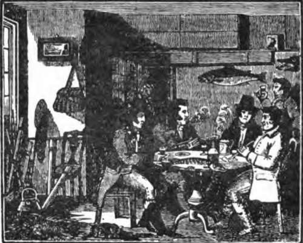
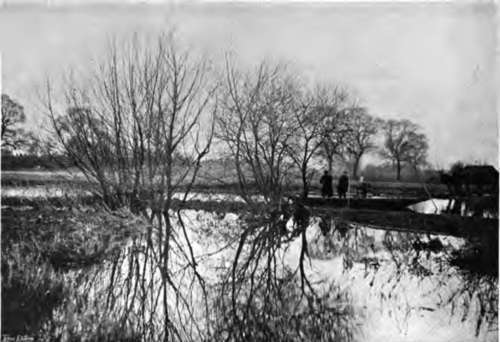
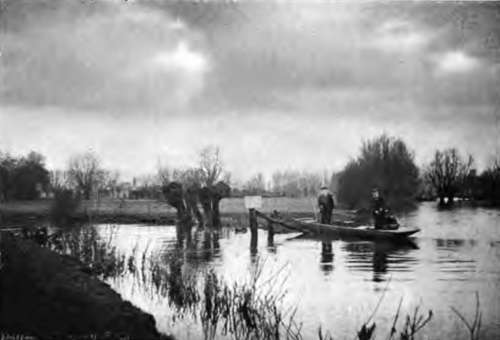
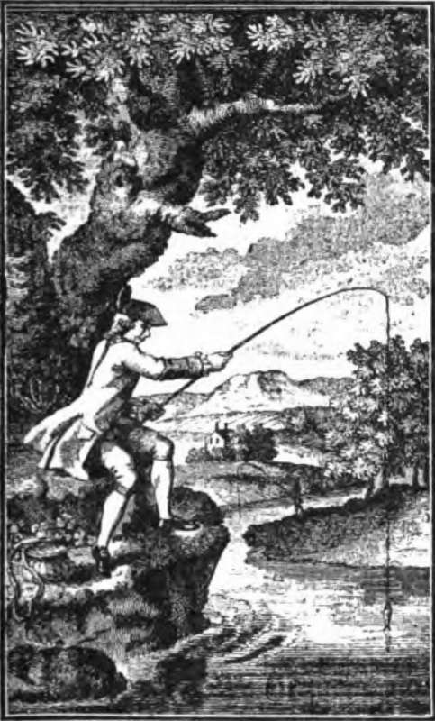

Fishing For Pike: Fables And Records. Continued
Description
This section is from the book "Fishing", by Horace G. Hutchinson. Also available from Amazon: Fishing.
Fishing For Pike: Fables And Records. Continued
The fecundity of pike is amazing. Frank Buck-land tells of one which was caught on April 2,1870, in one of the Norfolk Broads, and sent to him. It weighed 32 lbs., and measured 3 feet 8 inches; the roe weighed 5 lbs., and contained no less than 595,200 eggs. I append a record of some specimen pike of remarkable size caught with rod and line during the past thirty years in English waters:-
1874 Oct. . . | . 35 lbs. Caught in Rapley Lake. |
1875 Jan. . . | . 26J lbs. Caught in Thames, Hampton. |
*1876 Jan. 2. . | . 21 lbs. Caught in river Frome, Dorset. |
*1877 Jan. 5. . | 21½ lbs. Caught in Thames, Sonning. |
*1877 Feb. 24 . | . 36 lbs. Caught at Maidstone, Kent. |
*1878 Jan. 3. . | . 20J lbs. Caught in Thames, Sonning. |
1878 Jan. 30 . | 27 J lbs. Caught in Thames, Hampton. |
1878 Feb. . . | . 29 lbs. Caught in Norfolk. |
*1878 Feb. 4 . | . 22 lbs. Caught in Frome, Dorset. |
1878 Feb. 17 . | . 22 lbs. Caught in Witham, Bardney. |
1878 Feb. 24 . | . 36 lbs. Caught in Norfolk. |
*1878 Feb. 27 . | . 23 lbs. Caught at Petworth, Sussex. |
*1878 Mar. 14 . | . 22½ lbs. Caught near Chippenham, Wilts. |
*1879 Feb. 14 . | . 21½ lbs. Caught at Petworth, Sussex. |
1879 Feb. 24 . | 24 lbs. Caught at East well Park, Kent. |
* The pike marked * were caught by the writer of these chapters.
1879 Feb- 28 . | . 24½ lbs. Caught near Chippenham, Wilts. |
*1879 Sept. 4 . | . 37 lbs. Caught at Amersham, Bucks. |
*1880 Mar. 8 . | . 22 lbs. Caught at Petworth, Sussex. |
1880 April 10. | . 27 lbs. Caught at Halberton, Devon. |
*1882 Jan. 3 . . | . 23 lbs. Caught in Frome, Dorset. |
*1882 Feb. 23 . | . 30½ lbs. Caught near Glynde, Sussex. |
1883 July 2 . | . 24 lbs. Caught in Thames, Mariow. |
1883 Nov. 27 . | . 24¾ lbs. Caught in Norfolk. |
*1884 Jan. 19 . | . 23 lbs. Caught near the Avon, Chippenham, Wilts. |
*1884 Jan. 19 . | . 21 lbs. Caught near the Avon, Chippenham, Wilts. |
*1884 Jan. 19 . | . 2o½ lbs. Caught near the Avon, Chippenham, Wilts. |
*1884 Jan. 19 . | . 19½ lbs. Caught near the Avon, Chippenham, Wilts. |
*1884 Jan. 19 . | 19J lbs. Caught near the Avon, Chippenham. Wilts. |
1884 Nov. 20 . | . 21½ lbs. Caught in Sowley Pond, Hants. |
1884 Nov. 20 . | . 28 lbs. Caught in Sowley Pond, Hants. |
1887 Feb. 15 . | . 26 lbs. Caught near Chippenham, Wilts. |
1887 Feb. 15 . | . 23 lbs. Caught near Chippenham, Wilts. |
*1887 Feb. 15 . | . 22 lbs. Caught near Chippenham, Wilts. |
*1888 Nov. 25 . | . 22 lbs. Caught at Maidstone. Kent. |
*1888 Nov. 25 . | 19¾ lbs. Caught at Maidstone, Kent. |
1888 Nov. 14 . | . 22 lbs. Caught in Hay ward Wide-Water, Staffordshire. |
1890 Feb. 1 . | . 20½ lbs. Caught in Hayward Wide-Water, Staffordshire. |
1892 Dec. 1 . | . 22½ lbs. Caught in Hayward Wide-Water, Staffordshire. |
1893 Nov. 15 . | . 21½ lbs. Caught in Hayward Wide-Water, Staffordshire. |
1894 Jan. 16 . | . 25 lbs. Caught at Maidstone, Kent. |
1895 Dec. . . | . 25 lbs. Caught in river Dove-Tutbury, Staffordshire. |
*1896 Feb. 19 . | . 20 lbs. Caught near Chippenham, Wilts. |
*1807 Feb. • | . 19½ lbs. | Caught near Chippenham, Wilts. |
1897 Not. 22 . | • 30 lbs. | Caught at Dagenham, Essex. |
1899 Oct. . . | . 22 lbs. | Caught in Lake, Middlesex. |
1899 Nov. . . | . 23 lbs. | Caught in Norfolk. |
1899 Not. . • | • 20 lbs. | Caught in Wroxham Broad, Norfolk. |
1900 June. • • | . 27 lbs. | Caught in Bassenthwaite Lake. |
1900 Sept. • . | • 22 lbs. | Caught in Windermere Lake. |
1900 Not. . • | . 21½ lbs. | Caught in river Wensum, Norfolk. |
1900 Not. . . | . 22½ lbs. | Caught in Wroxham Broad, Norfolk. |
1900 Not. . . | . 22 lbs. | Caught in Oulton Broad, Norfolk. |
1900 Not. • . | . 25 lbs. | Caught in Woodbastwick Broad, Norfolk. |
1900 Dec . . | . 25 lbs. | Caught in river Trent, Staffordshire. |
1900 Dec. . . | . 20 lbs. | Caught in riTer ATon, Wiltshire. |
1900 Dec. . . | . 21 lbs. | Caught at Stoney - Stratford, Buckinghamshire. |
1901 Jan. . . | . 20 lbs. | Caught in river Trent, Staffordshire. |
1901 Not. • . | • 20 lbs. | Caught in Frensham Pond, Surrey. |
1901 Dec. • . | . 22½ lbs. | Caught in river Aran, Sussex. |
1901 Dec. . . | . 27 lbs. | Caught near Thames, Oxfordshire. |
1902 Jan. • . | . 24 lbs. | Caught in Private Water, Warwickshire. |
1902 Jan. . . | • 24 lbs. | Caught in Private Water, Nottinghamshire. |
1902 Jan. . • | . 24½ lbs. | Caught in Wroxham Broad, |
Norfolk. | ||
1902 Feb. • . | . 24 lbs. | Caught in Great Western Canal, Devon. |
1902 Feb. | 20lbs., 23 lbs., | and 28 lbs. Caught in Nottinghamshire. |
1902 Sept. . • | • 20 lbs. | Caught in river Derwent, Yorks. |
1902 | Oct. | • • • | 20½ lbs. Caught in Thames, Buscott, Berks. |
1902 | Oct. | • • • | 20¾ lbs. Caught at Gandtoft, Lincolnshire. |
1902 | Oct. | 25 lbs. | and 20 lbs. Caught in Naseby Reservoir, Northamptonshire.. |
1902 | Oct. | • • • | 24¾ lbs. Caught in river Lark, Norfolk. |
1902 | Oct. | • • • | 23½ lbs. Caught in Exeter Canal. |
1902 | Oct. | • . • | 20½ lbs. Caught in Thames, Buscott. |
1902 | Nov. | • • • | 22½ lbs. Caught in Tor cross Ley. Devon. |
*1902 | Nov. | • . • | 25½ lbs. Caught near Chippenham, Wilts. |
1903 | Jan. | • . • | 24½ lbs. Caught in river Penk, Staffordshire. |
1903 | Jan. | • • • | 21 lbs. Caught in Severn, Gloucestershire. |
1903 | Feb. | . • • | 23¼ lbs. Caught in Kennett, Berkshire. |
1903 | Feb. | • • • | 23½ lbs. Caught in private Lake, Nottinghamshire. |
1903 | Feb. | 26 lbs | and 21 lbs. Caught in Barton Broad, Norfolk. |
1903 | Feb. | • . • | 21½ lbs. Caught in Thames, Lechlade. |
1903 | Feb. | • • • | 34 lbs. Caught in river Wye, Herefordshire. |
At what size or weight does Esox-junior attain to the dignity of pikehood ?
Anglers differ as to this. Walton says at 2 feet length; Sir J. Hawkins says at 3 lbs. weight; Salter, at 3 lbs.; Hofland, 3 lbs., or when it exceeds 20 inches length; "Piscator" ("Practical Angler ") says 4 lbs.; " Ephemera," in his " Handbook on Angling," 3 or 4 lbs.; Blaine, 4 or 5 lbs.; Mr. C. Pennell favours a 3-lb. qualification. My own opinion is, that under 5 lbs. 2?50#-junior is still in his "jackhood"-in which Walton and to be three or four years old, and to have lived in water teeming with fish-food. Mr. Frank Buck-land's opinion (as often expressed by him to me) was 5 lbs.; also, that jack were infertile, and incapable of reproducing their species until they had attained the weight of at least 3 or 4 lbs.; and the fact that so many young fish under that weight, or say 20 inches in length, are caught and retained, fully accounts, I think, for the depletion of pike in English waters. It is unsportsmanlike to retain jack of such small size; they should be carefully played, unhooked, and returned to the water-to grow bigger, to " spawn" in due time, and afford sport to future anglers. A jack's growth also depends on other circumstances besides the extent of water he lives in, the number of his fellows who jointly tenant it, and the supply of food. Another very important thing is the infusion of " fresh blood" among fish inhabiting any particular water.
1 seem to agree-for a jack of 5 lbs. would measure
2 feet in length; to attain which, he would have
Through the courtesy of the noble owner of Ditton Park, I had, for many years, permission to fish the lake there, but the average of jack ran very small, ue. from 2 lbs. to 4 lbs.-occasionally one of 7 lbs. was captured; the jack were long and lank, and looked old, as if they had existed for years under difficulties. At length some dozens of vigorous Esox from the Colne were turned into the lake, and this addition speedily " made its mark," for,, in a few years after this "infusion of new blood," much bigger fish were caught-they were well-fed, sport-giving fish. I captured specimens from 9 lbs to 12½ lbs., and a 20-pounder in the "pink of condition."
" If I that am an angler may protest, Fishing is sweet pleasure, of sport the best, Of exercises the most excellent) Of recreations the most innocent; But now the sport is marred; and wot ye why ? Fishes decrease-for fishers multiply."
-"Epigram," Dc Piscatione, a.d. 1598.
20.- Where The Pike Lie.
21.- Where Two Streams Divide.

Continue to:
- prev: Chapter IX. Fishing For Pike: Fables And Records
- Table of Contents
- next: Chapter X. Fishing For Pike: Rods And Tackles